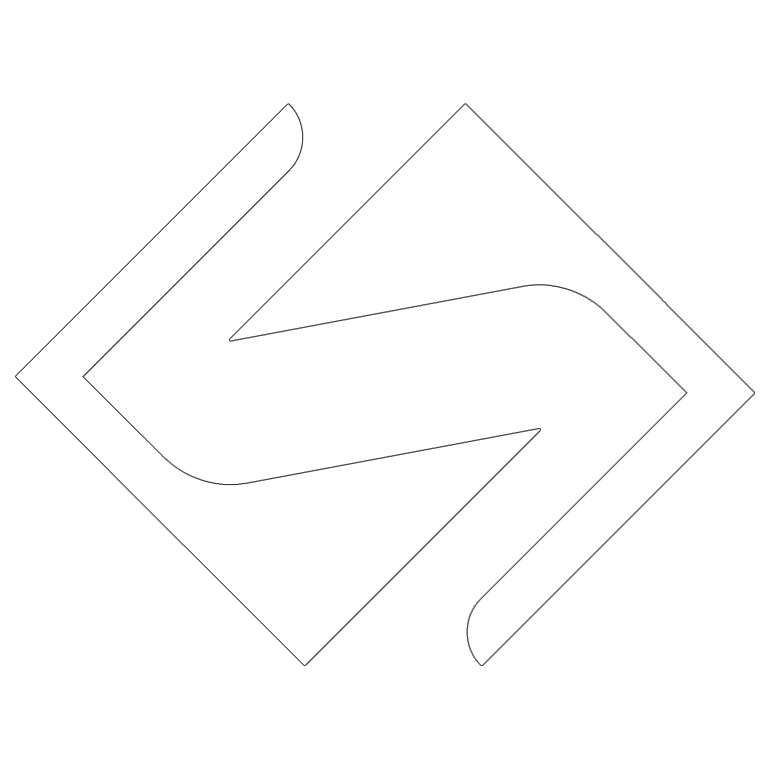

<nav class="navbar" ngxHideOnScroll [classNameWhenHidden]="'nav--hidden'">
  <!-- LOGO -->
  
  <!-- NAVIGATION MENUS -->
  <div>
    <ul class="nav-links">
      <label class="hamburger" (click)="toggleMenu()">
        <fa-icon *ngIf="!isMenuOpen" [icon]="faAnglesDown"></fa-icon>
        <fa-icon *ngIf="isMenuOpen" [icon]="faAnglesUp"></fa-icon>
      </label>
      <div [ngClass]="isMenuOpen ? ['menu', 'show-menu'] : 'menu'">
        <li *ngFor="let link of links">
          <a
            routerLink="{{ link.path }}"
            routerLinkActive="active-route"
            class="link"
            (click)="toggleMenu()"
            (click)="scrollToComponent(link.anchor)"
            >{{ link.pageTitle }}</a
          >
        </li>
        <!-- DROPDOWN MENU -->
        <!-- <li class="services">
            <a href="/">Services</a>
            <ul class="dropdown">
              <li><a href="/">Dropdown 1 </a></li>
              <li><a href="/">Dropdown 2</a></li>
              <li><a href="/">Dropdown 2</a></li>
              <li><a href="/">Dropdown 3</a></li>
              <li><a href="/">Dropdown 4</a></li>
            </ul>
          </li>
        </li> -->
      </div>
    </ul>
  </div>
  <!-- THEME TOGGLE -->
  <label class="switch">
    <input
      #checkbox
      type="checkbox"
      [checked]="isDarkThemeActive"
      (change)="toggleTheme($event)"
    />
    <span class="slider round">
      <fa-icon
        class="theme-icon"
        [icon]="checkbox.checked ? faMoon : faSun"
      ></fa-icon>
    </span>
  </label>
</nav>
